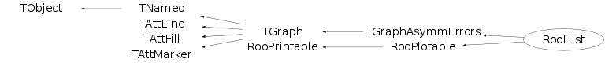

class RooHist: public TGraphAsymmErrors, public RooPlotable
A RooHist is a graphical representation of binned data based on the TGraphAsymmErrors class. Error bars are calculated using either Poisson or Binomial statistics. A RooHist is used to represent histograms in a RooPlot.
Function Members (Methods)
public:
protected:
| virtual Double_t** | TGraphAsymmErrors::Allocate(Int_t size) |
| Double_t** | TGraph::AllocateArrays(Int_t Narrays, Int_t arraySize) |
| virtual void | TGraphAsymmErrors::CopyAndRelease(Double_t** newarrays, Int_t ibegin, Int_t iend, Int_t obegin) |
| virtual Bool_t | TGraphAsymmErrors::CopyPoints(Double_t** arrays, Int_t ibegin, Int_t iend, Int_t obegin) |
| Bool_t | TGraphAsymmErrors::CtorAllocate() |
| virtual void | TObject::DoError(int level, const char* location, const char* fmt, va_list va) const |
| Double_t** | TGraph::ExpandAndCopy(Int_t size, Int_t iend) |
| virtual void | TGraphAsymmErrors::FillZero(Int_t begin, Int_t end, Bool_t from_ctor = kTRUE) |
| void | initialize() |
| void | TObject::MakeZombie() |
| Int_t | roundBin(Double_t y) |
| Double_t** | TGraph::ShrinkAndCopy(Int_t size, Int_t iend) |
| virtual void | TGraphAsymmErrors::SwapPoints(Int_t pos1, Int_t pos2) |
| static void | TGraph::SwapValues(Double_t* arr, Int_t pos1, Int_t pos2) |
Data Members
public:
| enum TGraph::[unnamed] { | kClipFrame | |
| kNotEditable | ||
| }; | ||
| enum TObject::EStatusBits { | kCanDelete | |
| kMustCleanup | ||
| kObjInCanvas | ||
| kIsReferenced | ||
| kHasUUID | ||
| kCannotPick | ||
| kNoContextMenu | ||
| kInvalidObject | ||
| }; | ||
| enum TObject::[unnamed] { | kIsOnHeap | |
| kNotDeleted | ||
| kZombie | ||
| kBitMask | ||
| kSingleKey | ||
| kOverwrite | ||
| kWriteDelete | ||
| }; | ||
| enum RooPrintable::ContentsOption { | kName | |
| kClassName | ||
| kValue | ||
| kArgs | ||
| kExtras | ||
| kAddress | ||
| kTitle | ||
| kCollectionHeader | ||
| }; | ||
| enum RooPrintable::StyleOption { | kInline | |
| kSingleLine | ||
| kStandard | ||
| kVerbose | ||
| kTreeStructure | ||
| }; |
protected:
Class Charts
{kind=link}
{kind=link}
{kind=link}
{kind=link}

Function documentation
RooHist(Double_t nominalBinWidth, Double_t nSigma = 1, Double_t xErrorFrac = 1.0, Double_t scaleFactor = 1.0)
Create an empty histogram that can be filled with the addBin() and addAsymmetryBin() methods. Use the optional parameter to specify the confidence level in units of sigma to use for calculating error bars. The nominal bin width specifies the default used by addBin(), and is used to set the relative normalization of bins with different widths.
RooHist(const TH1& data, Double_t nominalBinWidth = 0, Double_t nSigma = 1, RooAbsData::ErrorType = RooAbsData::Poisson, Double_t xErrorFrac = 1.0, Bool_t correctForBinWidth = kTRUE, Double_t scaleFactor = 1.)
Create a histogram from the contents of the specified TH1 object which may have fixed or variable bin widths. Error bars are calculated using Poisson statistics. Prints a warning and rounds any bins with non-integer contents. Use the optional parameter to specify the confidence level in units of sigma to use for calculating error bars. The nominal bin width specifies the default used by addBin(), and is used to set the relative normalization of bins with different widths. If not set, the nominal bin width is calculated as range/nbins.
RooHist(const TH1& data1, const TH1& data2, Double_t nominalBinWidth = 0, Double_t nSigma = 1, RooAbsData::ErrorType = RooAbsData::Poisson, Double_t xErrorFrac = 1.0, Bool_t efficiency = kFALSE, Double_t scaleFactor = 1.0)
Create a histogram from the asymmetry between the specified TH1 objects which may have fixed or variable bin widths, but which must both have the same binning. The asymmetry is calculated as (1-2)/(1+2). Error bars are calculated using Binomial statistics. Prints a warning and rounds any bins with non-integer contents. Use the optional parameter to specify the confidence level in units of sigma to use for calculating error bars. The nominal bin width specifies the default used by addAsymmetryBin(), and is used to set the relative normalization of bins with different widths. If not set, the nominal bin width is calculated as range/nbins.
RooHist(const RooHist& hist1, const RooHist& hist2, Double_t wgt1 = 1.0, Double_t wgt2 = 1.0, RooAbsData::ErrorType etype = RooAbsData::Poisson, Double_t xErrorFrac = 1.0)
Create histogram as sum of two existing histograms. If Poisson errors are selected the histograms are added and Poisson confidence intervals are calculated for the summed content. If wgt1 and wgt2 are not 1 in this mode, a warning message is printed. If SumW2 errors are selectd the histograms are added and the histograms errors are added in quadrature, taking the weights into account.
Double_t getFitRangeNEvt() const
Return the number of events of the dataset associated with this RooHist. This is the number of events in the RooHist itself, unless a different value was specified through setRawEntries()
Double_t getFitRangeNEvt(Double_t xlo, Double_t xhi) const
Calculate integral of histogram in given range
Int_t roundBin(Double_t y)
Return the nearest positive integer to the input value and print a warning if an adjustment is required.
void addBin(Axis_t binCenter, Double_t n, Double_t binWidth = 0, Double_t xErrorFrac = 1.0, Double_t scaleFactor = 1.0)
Add a bin to this histogram with the specified integer bin contents and using an error bar calculated with Poisson statistics. The bin width is used to set the relative scale of bins with different widths.
void addBinWithError(Axis_t binCenter, Double_t n, Double_t elow, Double_t ehigh, Double_t binWidth = 0, Double_t xErrorFrac = 1.0, Bool_t correctForBinWidth = kTRUE, Double_t scaleFactor = 1.0)
Add a bin to this histogram with the specified bin contents and error. The bin width is used to set the relative scale of bins with different widths.
void addBinWithXYError(Axis_t binCenter, Double_t n, Double_t exlow, Double_t exhigh, Double_t eylow, Double_t eyhigh, Double_t scaleFactor = 1.0)
Add a bin to this histogram with the specified bin contents and error. The bin width is used to set the relative scale of bins with different widths.
void addAsymmetryBin(Axis_t binCenter, Int_t n1, Int_t n2, Double_t binWidth = 0, Double_t xErrorFrac = 1.0, Double_t scaleFactor = 1.0)
Add a bin to this histogram with the value (n1-n2)/(n1+n2) using an error bar calculated with Binomial statistics.
void addAsymmetryBinWithError(Axis_t binCenter, Double_t n1, Double_t n2, Double_t en1, Double_t en2, Double_t binWidth = 0, Double_t xErrorFrac = 1.0, Double_t scaleFactor = 1.0)
Add a bin to this histogram with the value (n1-n2)/(n1+n2) using an error bar calculated with Binomial statistics.
void addEfficiencyBin(Axis_t binCenter, Int_t n1, Int_t n2, Double_t binWidth = 0, Double_t xErrorFrac = 1.0, Double_t scaleFactor = 1.0)
Add a bin to this histogram with the value n1/(n1+n2) using an error bar calculated with Binomial statistics.
void addEfficiencyBinWithError(Axis_t binCenter, Double_t n1, Double_t n2, Double_t en1, Double_t en2, Double_t binWidth = 0, Double_t xErrorFrac = 1.0, Double_t scaleFactor = 1.0)
Add a bin to this histogram with the value n1/(n1+n2) using an error bar calculated with Binomial statistics.
Bool_t hasIdenticalBinning(const RooHist& other) const
Bool_t isIdentical(const RooHist& other, Double_t tol = 1e-6) const
Return kTRUE if contents of this RooHIst is identical within given relative tolerance to that of 'other'
void printMultiline(ostream& os, Int_t content, Bool_t verbose = kFALSE, TString indent = "") const
Print info about this histogram to the specified output stream. Standard: number of entries Shape: error CL and maximum value Verbose: print our bin contents and errors
RooHist* makeResidHist(const RooCurve& curve, bool normalize = false) const
RooHist()